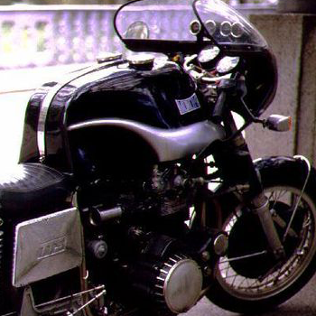

Motocykl – jedno- lub dwuśladowy mechaniczny pojazd drogowy o masie własnej do 400 kg. Według Prawa o ruchu drogowym jest to pojazd samochodowy zaopatrzony w silnik spalinowy, dwukołowy lub z bocznym wózkiem – wielośladowy. Określenie to obejmuje również pojazd trójkołowy o symetrycznym rozmieszczeniu kół.